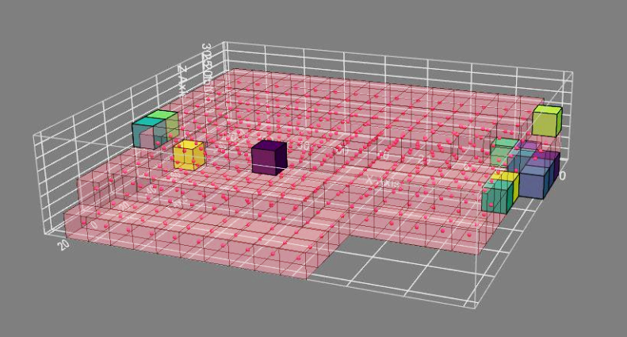
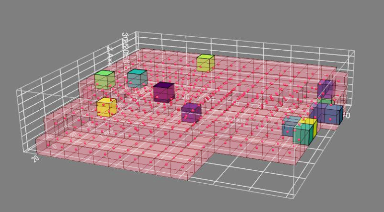
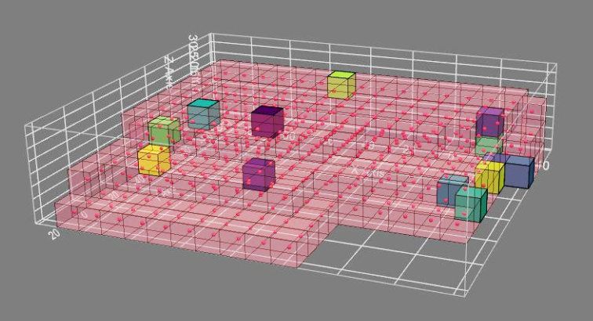

Process
Here you should include the process and product of your 3rd activity: Massing
| Title | Massing (process): Composition (product) |
|---|---|
| Objective | Logically place the functional spaces in between bridges within the building envelope. |
| Procedure | Compute a Solar Envelope, i.e. an envelope of cuboids/voxels, some of which are removed because they are in the way of the neighbouring buildings receiving some standard/minimum level of direct sunlight. Fit the circulation manifold into the solar envelope. From the standing platforms corresponding to functional spaces, grow them into voxel clouds within your voxelated envelope. Colour the voxel clouds according to their functionalities. |
MCDA
MCDA Seed Allocation
| 1. Initial location | 2. Attraction | 3. Final location |
|---|---|---|
 |
|
|
|  |  |  |
| The location of the seed agents is calculated by looking at the static environmental data: Entrance access, street noise, sky view factor, etc. | The different seed agents are attracted to each other, based on the connectivity matrix. They ‘walk’ around, until they have reached an ideal location based on internal attraction and external data. | The seed agents have reached an equilibrium. |
| Pseudocode | |
|---|---|
| Input | Static env-data, preference and connectivity matrix |
| Output | Seed agent positions |
| Code | def select-neighbours:
def distance-lattice:
for each agent:
while t < threshold:
|
MCDA Growth algorithm
| 1. Starting the growth | 2. Growing | 3. Finished growth |
|---|---|---|
 |
 |
 |
| All the agent seeds are evaluated and their best neighbour is chosen based on the static env-data and closeness to other agents. This is done with the connectivity and preference matrix | For each agent, the algorithm evaluates every voxel and calculates all the possible neighbors. The best one is chosen. | The max. number of voxels per agent has been reached, the division of the spaces has ended. |
| Pseudocode | |
|---|---|
| Input | Static env-data, preference and connectivity matrix |
| Output | Occupation lattice |
| Code | while t < threshold:
|
Spatial behaviours
Squareness
If there is the need for a space to be more rectangular, instead of free-form, the squareness algorithm can be used.

| Pseudocode | |
|---|---|
| Input | Voxelized envelope, squareness preferences |
| Output | Impacts the growing algorithm |
| Code | For each agent (during the growth process):
For those voxels that were neighbours to the previous agent, increase the voxel value (the more often a voxel has been a neighbour of an agent, the more the voxel value increases) Select the neighbour with the highest voxel value
|